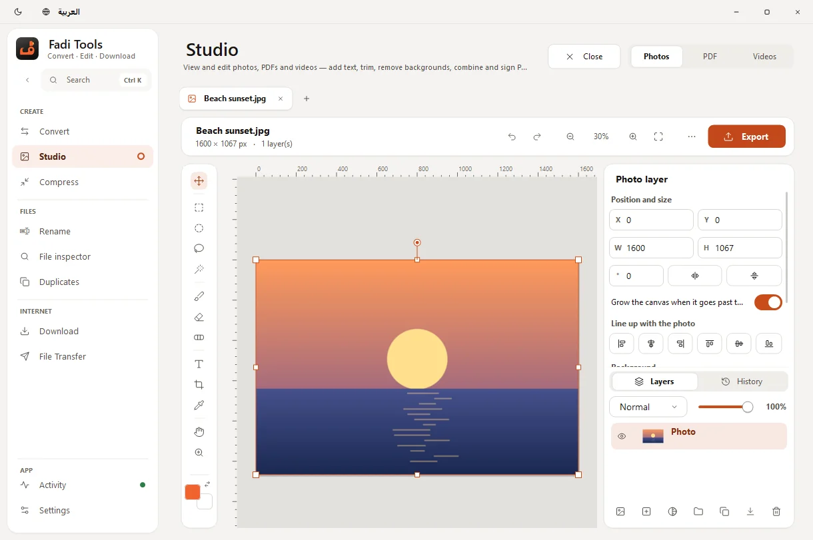

Convert, compress, edit and download files. All on your PC.
Fadi Tools is one free Windows app for the jobs you'd otherwise need five websites for. It works offline, nothing gets uploaded, and it speaks English and Arabic.

What it does
Everything runs on your computer, so private files stay private and big files don't wait on an upload.
Take a look
The real app, in light or dark to match your system, and fully right to left in Arabic.
Download
Pick one. Both are the same app, from the latest release on GitHub.
Fadi.Tools.zip
Everything included. Unzip it anywhere and open Fadi Tools.exe. Works straight away, even without internet.
Get the zipFadi.Tools.exe
Just the app. The first time it opens, it downloads the engines it needs (like FFmpeg) and asks before anything big.
Get the exeWindows protected your PC? Fadi Tools isn't code-signed yet, so Windows may warn about it. Click More info, then Run anyway. Every release is built and tested by GitHub Actions from the public code.
Your files stay on your PC
Fadi Tools connects to the internet only when you ask it to: to download a video, to send a file to a friend, to fetch an engine or AI model the first time, or to check for an update.